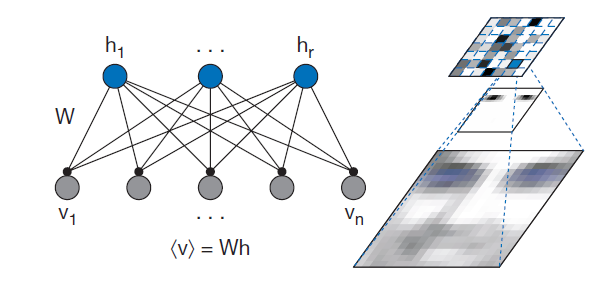
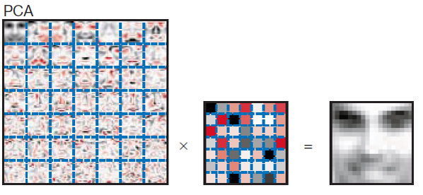

from sklearn.datasets import fetch_olivetti_faces
olivetti_faces = fetch_olivetti_faces()
olivetti_faces.images.shape(400, 64, 64)Decompose the data matrix and interpret its ‘first’ eigenvalues as concepts/topics for user and activity classification:
\[M = U \Sigma V^T\]
\(U_{(m \times r)}\) is column-orthonormal: \(u_i\cdot u_j^T=0\)
\(V^T_{(r \times n)}\) is row-orthonormal: \(v_i^T\cdot v_j=0\)
\(\Sigma_{(r \times r)}\) is diagonal, \(\sigma_{ij}\) are the singular values
dimension r will depend on the no. of singular values found
With negative values we cannot distinguish between i) lack of information, ii) lack of interest or ii) outright repulsion.
A non-negative decomposition of the activity matrix would be interpretable:
\[A_{(n\times d)} = P_{(n\times r)} \cdot Q_{(r\times d)}\]
\(A\): activity
\(P\): user participation to a topic
\(Q\): quantity of the topic in product
user/product profiling and reccommender sys. would be half-done already!
Istance: a non-negative matrix V
Solution: non-negative matrix factors W and H s.t.
\[ V \approx W \cdot H \]
with \(w_{ij}, h_{rs}\ge 0\)
\[ A = B \cdot C \]
Let \(\mathbf{a}_i\) be the i-th column of A. It can be expressed as
\[ \mathbf{a}_i = B \cdot \mathbf{c}_i \]
each col. of the result is seen as a linear combination of the cols. of B, with \(\mathbf{c}_i\) supplying the weights:
\[ \mathbf{a}_i = B \cdot \mathbf{c}_i = c_{1,i}\mathbf{b}_1 + c_{2,i}\mathbf{b}_2 + \dots + c_{n,i}\mathbf{b}_n \]
Let \(\mathbf{v}_i\) be the i-th column of V.
If V is an activity m., \(\mathbf{v}_i\) represent the consumption of \(i\)
\[ v_i \approx W\cdot h_i \]
Consumption of i is given by a linear combination of the cols. of W, with \(h_i\) supplying the weights.
Each \(\mathbf{w}_i\) is interpretable as a pattern (or mask)
[Lee & Seung, Nature, 1999]: “Learning the parts of objects by non-negative matrix factorization.”
\[ \mathbf{v}_i \approx \mathbf{w}_1 \cdot h_{1,i} + \dots \mathbf{w}_r \cdot h_{1,r} \]
W can be regarded as containing a basis that is optimized for the linear approximation of the data in V.
Since relatively few basis vectors are used to represent many data vectors, good approximation can only be achieved if the basis vectors discover structure that is latent in the data.
Frobenius’ element-wise norm: \(||A_{m\times n}||_F = \sqrt{\sum_{i=1}^m\sum_{j=1}^na_{ij}^2} = \sqrt{\sum_{i,j}a_{ij}^2}\)
Notation for error:
\(||X - Y||_F^2 = ||X - Y||^2 = \sum_{i,j}(x_{ij} - y_{ij})^2\)
Input: \(V_{n\times m}\)
Minimize \(||V - WH||^2\)
subject to \(W,H \ge 0\).
choose the new dimension r s.t. \((n+m)r < nm\);
calculate \(W_{n\times r}\) and \(H_{r\times m}\).
If the input matrix can be (somehow) normalised then we see the search for the perfect non-negative decomposition in terms of minimizing divergence:
\(D_I(X||Y) = \Sigma_{i,j} (x_{ij}\cdot \log(\frac{x_{ij}}{y_{ij}}) - x_{ij} + y_{ij}))\)
Minimize \(D_I(V || W H)\)
subject to \(W,H \ge 0\).
Recommended version for sparse counting data.
The Kullback-Leibler divergence, \(D_{KL},\) may also be used.
Although [error func.] are convex in W only or H only, they are not convex in both variables together.
Therefore it is unrealistic to expect an algorithm to solve [the problem] in the sense of finding global minima.
However, there are many techniques from numerical optimization for finding local minima.
Gradient descent is perhaps the simplest technique to implement, but convergence can be slow.
start from random W and H
compute the error
update W and H with the multiplicative update rule:
Classical Gradient descent: we move around by adding/subtracting some quantity
NMF: we move around by multiplying by a local error measure
\(\frac{v_{i\mu}}{(wh)_{i\mu}}\)
through iteration, the \(\frac{v_{i\mu}}{(wh)_{i\mu}}\) factors vanish and we stop.
the update rules maintain non-negativity and force \(\mathbf{w}_i\) to sum to 1.
A probabilistic hidden-variables model:

Cols. of W are bases that are combined to form the rec.
The influence of \(\mathbf{h}_a\) on \(\mathbf{v}_i\) is represented by a connection of strength \(w_{ia}\)
The eigenfaces might have negative values
Check a visual comparison of the methods on 64x64=4096 mugshots: 40 classes for 400 samples.
N=7, M=5.
Fix K=2 and run NMF:
np.dot(nP, nQ.T) = [
[ 1.01541991 1.00333129 0.97277743 1.06287968 1.04171324]
[ 3.01303945 2.99879446 2.96279189 3.09527589 3.0083412 ]
[ 3.95992279 3.97901104 4.02726085 3.9655638 3.80912366]
[ 4.99247343 4.98812249 4.97712927 5.07657468 4.91104751]
[ 3.52001748 3.37358497 3.00347147 3.96773585 4.01098322]
[ 4.51837154 4.37142223 4.00000329 4.98195069 4.99170315]
[ 2.10390225 2.13556026 2.21557931 2.04860435 1.94148161]
]np.rint(np.dot(nP, nQ.T))= [
[ 1. 1. 1. 1. 1.]
[ 3. 3. 3. 3. 3.]
[ 4. 4. 4. 4. 4.]
[ 5. 5. 5. 5. 5.]
[ 4. 4. 4. 4. 4.]
[ 5. 5. 5. 5. 5.]
[ 2. 2. 2. 2. 2.]
]ratings = [[1, 1, 1, 0, 0],
[3, 3, 3, 0, 0],
[4, 4, 4, 0, 0],
[5, 5, 5, 0, 0],
[0, 0, 0, 4, 4],
[0, 0, 0, 5, 5],
[0, 0, 0, 2, 2]]try Scikit-learn on the same instance (right-click to save a local copy).
W(user x topic) = [
[ 0. 0.82037571]
[ 0. 2.46112713]
[ 0. 3.28150284]
[ 0. 4.10187855]
[ 1.62445593 0. ]
[ 2.03056992 0. ]
[ 0.81222797 0. ]
]W: users’ committment to a topic.
H: films’ pertinence to a specific topic (binary, why?)